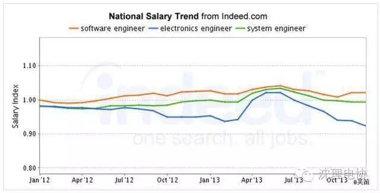
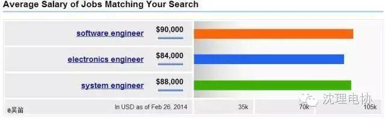
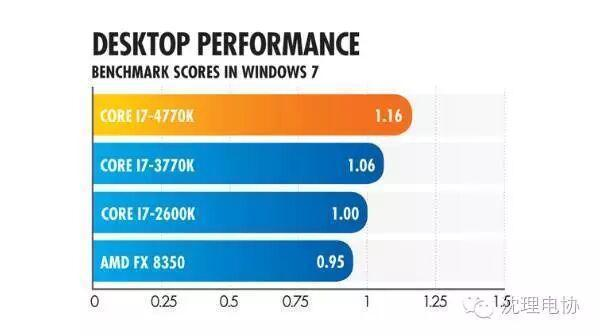

使用小程序
我是在校大学生 专业是电子工程，初中也参加过NOIP。虽说走软件方向更容易入手 但还是觉得电子更好玩所以选了这个专业。为什么感觉硬件类的学生很不吃香?比如有很多软件工程师的个人博客，类似MATRIX67、酷壳、阮一峰等等，但是偏硬件的就很少。
为了高考受够了压力，大学必须不能继续那个状态啊。数电模电都在学，但也不清楚这些电路到底能用来干什么，应付完考试就抛之脑后了。等若干年后工作需要碰到问题了，才又把大学课本翻出来再啃，周围同事不乏清华，交大，华科的硕士，但大家都在感叹，如果早知道是用来干这个，那当时学的可得多起劲啊；如果大学教育能跟实际结合的紧密一些，那我们可得少走多少弯路，如果当初多做一些实践，可得增加多少有用的积累啊。玩游戏？谁还会去浪费那时间。睡懒觉？我哪有那闲功夫。什么？泡妞？清晰的人生理想面前，你跟我提泡妞？呵呵，妞还是得泡的。
没有后悔药给我们吃，但我们的病历可以给你们看，我想对于大多数学生，都在被动的接收学校，社会安排推送给你们的知识和活动，想想如果学校不组织挑战者杯之类的比赛，那我们是不是就不做东西了呢？但我们能不能更积极的，主动的去了解社会，了解你梦想公司的产品是什么样的？那里的工程师们都在做些什么？他们都在提高哪些技能？他们都在泡什么论坛？你课本上的知识是如何被用到具体产品里去的？


在远古时代（其实不是很远，15年前），IT行业的硬件初创企业相当普遍。比如，1997年，硅谷的创业传奇华人谢青 (Ken Xie)在车库里创办了NetScreen，一个专注于防火墙的网络安全公司。

时间到了2000这个十年的中后期，慢慢地人们发现，便宜的、可以大规模生产的芯片的性能已经开始够用了，那么为什么要冒险投资上千万美元，设计一个还不知道能不能卖出去的芯片呢？实际上，过去几年，桌面系统和服务器系统的运算能力已经进入平台期。
这个问题其实没有标准的答案。有时势的影响，也有公司的定位，还有个人的奋斗和机遇。最重要的就是，不停地学习和实践。
编辑/高星华